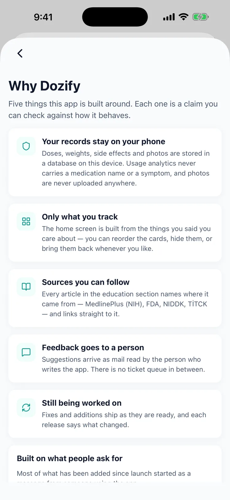
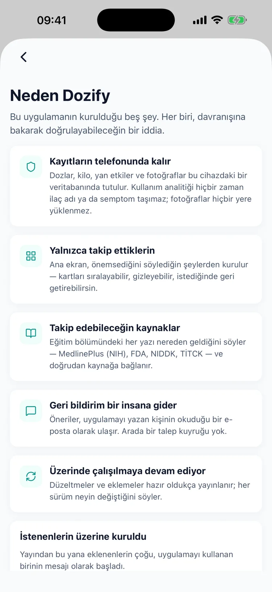

No account. Nothing leaves your phone.
Hesap yok. Telefonundan çıkmıyor.
The problem
A GLP-1 log is a medical record about a treatment many people do not discuss. Handing it to a service that requires an account, a login and a server is a decision, and it is usually made by default.
Sorun
GLP-1 günlüğü, birçok insanın konuşmadığı bir tedaviye dair tıbbi bir kayıt. Bunu hesap, giriş ve sunucu isteyen bir servise vermek bir karardır: ve genellikle varsayılan olarak verilir.
What Dozify does
There is no account to make
Install it and start. Nothing to sign up for, nothing to sign in to, and nothing to delete from a server later.
It works with the network off
Everything is on the device. Uninstalling takes your records with it.
Analytics that carry no health data
Anonymous usage counts only: never which medication you take, never a symptom. You can switch them off entirely.
Dozify ne yapıyor
Açılacak bir hesap yok
Kur ve başla. Kaydolacak, giriş yapacak bir şey yok; sonradan sunucudan sildirecek bir şey de yok.
Ağ kapalıyken de çalışır
Her şey cihazda. Uygulamayı sildiğinde kayıtların da gider.
Sağlık verisi taşımayan analitik
Yalnızca anonim kullanım sayıları: hangi ilacı kullandığın da, belirtilerin de gönderilmez. Tamamen kapatabilirsin.


Who this helps
People who are not willing to put a prescription, a weight and a symptom list behind someone else's login, and people who share a household, a phone plan or a family account and would rather this did not appear in it. Also anyone who has read what a free health app usually does with data and decided against it.
Kimin işine yarar
Bir reçeteyi, bir kiloyu ve bir belirti listesini başkasının hesabının arkasına koymaya razı olmayanlar; aynı evi, aynı hat paketini ya da bir aile hesabını paylaşan ve bunun orada görünmesini istemeyenler. Bir de ücretsiz bir sağlık uygulamasının veriyle genelde ne yaptığını okuyup vazgeçmiş olan herkes.
Where it stops
Records that only exist on one phone are lost with that phone. Dozify makes an encrypted backup file you keep yourself; there is no cloud that will quietly restore anything for you. Two things do leave the device, and the privacy policy names both: anonymous usage statistics, which never carry a medication name or a symptom, and a measurement of whether an install came from one of our own App Store or Meta campaigns, which runs behind Apple's tracking permission.
Nerede duruyor
Yalnızca tek bir telefonda duran kayıtlar, o telefonla birlikte kaybolur. Dozify kendinizde tuttuğunuz şifreli bir yedek dosyası oluşturur; sizin için bir şeyi sessizce geri yükleyecek bir bulut yok. Cihazdan iki şey çıkar ve gizlilik politikası ikisini de adıyla yazar: hiçbir zaman ilaç adı veya belirti taşımayan anonim kullanım istatistikleri ve bir kurulumun kendi App Store ya da Meta kampanyalarımızdan gelip gelmediğinin ölçümü: bu ikincisi Apple'ın takip izninin arkasında çalışır.
Private by default
Your health records stay on your device and are never uploaded. There is no account and no cloud sync. Usage statistics never carry a medication name or a symptom, details in the privacy policy.
Varsayılan olarak gizli
Sağlık kayıtların cihazında kalır ve hiçbir yere yüklenmez. Hesap yok, bulut senkronu yok. Kullanım istatistikleri hiçbir zaman ilaç adı veya belirti taşımaz, ayrıntılar gizlilik politikasında.
Download on the App Store App Store'dan indir
Questions
Sorular
Is there an account?
Hesap var mı?
No. There is nothing to sign up for and nothing to sign in to. The app opens straight into your own data.
Yok. Kaydolunacak bir şey yok, oturum açılacak bir şey yok. Uygulama doğrudan kendi verinizle açılır.
What is collected, exactly?
Tam olarak ne toplanıyor?
Anonymous usage statistics (which screens are used, whether something crashed) with no medication name, no symptom and no weight in them. The privacy policy lists what is sent and what never is.
Anonim kullanım istatistikleri (hangi ekranlar kullanılıyor, bir şey çöktü mü) içlerinde ilaç adı, belirti ve kilo olmadan. Gizlilik politikası neyin gönderildiğini ve neyin asla gönderilmediğini sayar.
Can I get my data out?
Verimi dışarı alabilir miyim?
Yes. Backup writes an encrypted, password-protected file to your device, which you keep and restore from wherever you keep it.
Evet. Yedekleme, cihazınıza şifreli ve parola korumalı bir dosya yazar; onu siz saklar, sakladığınız yerden geri yüklersiniz.
What happens if I delete the app?
Uygulamayı silersem ne olur?
Your records go with it. There is no copy on a server to come back later, which is the point and also the reason to take a backup first.
Kayıtlarınız da gider. Sonradan geri gelecek bir sunucu kopyası yoktur; mesele budur ve önce yedek almanın sebebi de budur.
Is the data encrypted on the phone?
Veriler telefonda şifreli mi?
It is stored in the app's own database inside iOS's app sandbox, and backup files are encrypted with the password you set.
iOS'un uygulama kum havuzu içinde, uygulamanın kendi veritabanında saklanır; yedek dosyaları ise sizin belirlediğiniz parolayla şifrelenir.
Read next
Guides, with their sources named: what GLP-1 actually is, where to inject and how to rotate, managing common side effects and how to read a health app's privacy label.
Elsewhere in Dozify: importing from another app and the doctor report.
Sonra şunlar
Kaynağı yazılı rehberler: GLP-1'in aslında ne olduğu, nereye yapılır, rotasyon nasıl olur, yaygın yan etkilerle baş etmek ve bir sağlık uygulamasının gizlilik etiketi nasıl okunur.
Dozify'ın diğer yanları: başka uygulamadan aktarma ve doktor raporu.